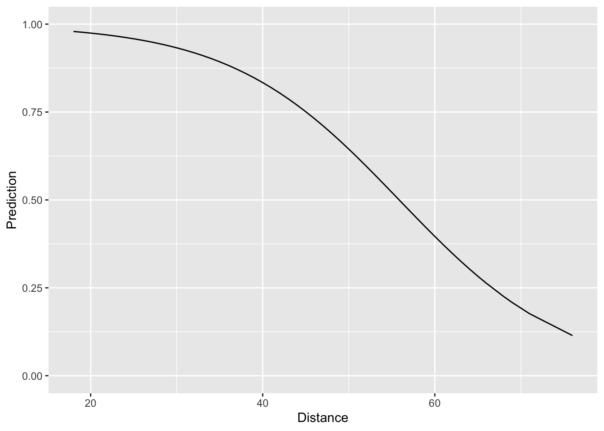
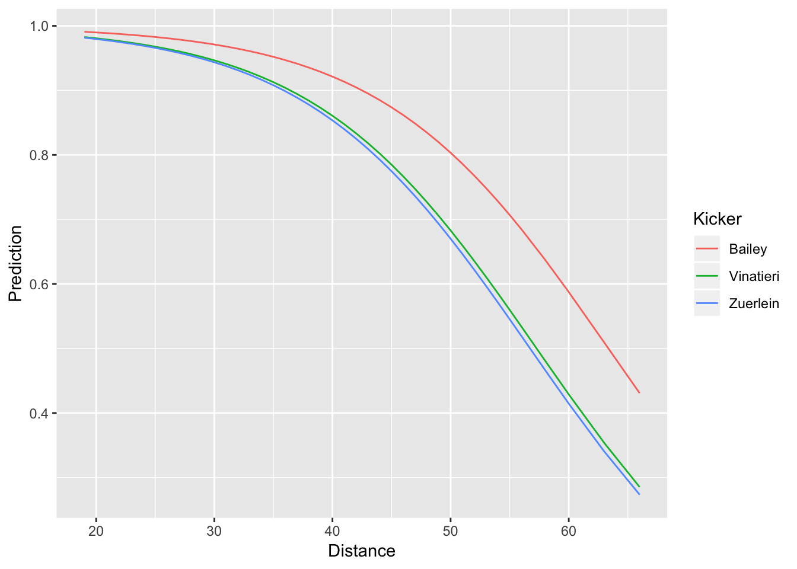

In Lecture 7, we predicted field goal success using a similar strategy to the one we used in Lecture 4 to predict batting averages in 2015 using batting averages from 2014. This strategy amounted to “binning-and-averaging: we divided the dataset into many small bins, based on the value of the input or predictor, and then averaged the outcomes within each bin. In Lecture 6, we used linear regression to take this process to the logical extreme with infinitessimally small bins in the context of predicting a continuous response. Today, we will use logistic regression to take the binning-and-averaging to predicting binary responses to the same logical extreme. Just as our goal with linear regression was to predict the average outcome for any given input, our ultimate goal with logistic regression is to produce a probability forecast for each input. For instance, in the context of NFL field goals, we would like to know, say, what the probability is that a kicker successfully converts a 45-yard field goal attempt.
Before we get started, we will load the tidyverse and modelr packages and also load the tbls we saved at the end of Lecture 7.
library(tidyverse)
library(modelr)
load("data/nfl_fg.RData")We can fit a logistic regression model using the function glm(). In the code block below, we fit a model of the success probability as a function of distance. You’ll notice that the syntax is very similar to the lm() syntax we saw in Lecture 6. The major difference is that we have to include an argument family = binomial. This tells R that we are fitting a regression model for binary outcomes.
logit_distance <- glm(Success~Distance, family = binomial, data = fg_train)We can visualize this model fit by (i) creating a grid of distance values and (ii) plotting the estimated probability of field goal success at each of the distances in the grid. We can do this using data_grid() and add_predictions() just like we did in Lecture 6. Notice, however, that in add_predictions() we have an extra argument type="response". In the context of logistic regression, this argument tells R that we want to return the fitted probabilities instead of the fitted log-odds.
distance_preds <-
fg_train %>%
data_grid(Distance) %>%
add_predictions(model = logit_distance, type = "response", var = "Prediction")
ggplot(data = distance_preds) +
geom_line(mapping = aes(x = Distance, y = Prediction)) +
ylim(c(0,1))
Looking at the plot, things look quite reasonable – short field goals are nearly always made and as the distance increases, the fitted probability of success goes down in a non-linear fashion. The question we face now is assessing how well our simple logistic regression model compares to the “binning-and-averaging” models we built in Lecture 7. In order to assess this, we would like to append the model predictions to the tbls fg_train and fg_test, respectively. Rather than using a join, we can actually do this directly with add_prediction(). The reason for this is that add_prediction() is able to accept as an argument the output of lm() or glm(). Since our “binning-and-averaging” models were not created by either of these functions we had to use a join in Lecture 7. The codeblock below shows how to add our predictions to fg_train and fg_test and also computes the Brier score associated with all of the models we’ve built so far. Notice that we are saving the predictions in a column called “phat_dist_logit.”
fg_train <-
fg_train %>%
add_predictions(model = logit_distance, var = "phat_dist_logit", type = "response")
summarise(fg_train,
phat_all = mean( (Success - phat_all)^2),
phat_kicker = mean( (Success - phat_kicker)^2),
phat_dist_10 = mean( (Success - phat_dist_10)^2),
phat_dist_5 = mean( (Success - phat_dist_5)^2),
phat_dist_2 = mean( (Success - phat_dist_2)^2),
phat_dist_logit = mean( (Success - phat_dist_logit)^2))## # A tibble: 1 x 6
## phat_all phat_kicker phat_dist_10 phat_dist_5 phat_dist_2 phat_dist_logit
## <dbl> <dbl> <dbl> <dbl> <dbl> <dbl>
## 1 0.140 0.138 0.125 0.123 0.123 0.123Looking at the Brier scores, we see that our new logistic model fits the data much better than “phat_all”, the overall average success rate, and “phat_kicker”, the kicker-specific overall average. Moreover, it also fits better than the first model we built where we binning the distances into 10-yard increments. It turns out, however, that our logistic regression model fits the training data worse than the the models which binned the distances into 5-yard and 2-yard increments. However, to better assess whether the new logistic regression model is truly better than these two, we have to look at how well it performs out-of-sample on the testing dataset.
fg_test <-
fg_test %>%
add_predictions(model = logit_distance, var = "phat_dist_logit", type = "response")
summarise(fg_test,
phat_all = mean( (Success - phat_all)^2),
phat_kicker = mean( (Success - phat_kicker)^2),
phat_dist_10 = mean( (Success - phat_dist_10)^2),
phat_dist_5 = mean( (Success - phat_dist_5)^2),
phat_dist_2 = mean( (Success - phat_dist_2)^2),
phat_dist_logit = mean( (Success - phat_dist_logit)^2))## # A tibble: 1 x 6
## phat_all phat_kicker phat_dist_10 phat_dist_5 phat_dist_2 phat_dist_logit
## <dbl> <dbl> <dbl> <dbl> <dbl> <dbl>
## 1 0.134 0.133 0.120 0.118 0.118 0.117We see clearly, now, that our logistic regression model has the best out-of-sample performance. This would indicate that “phat_dist_5” and “phat_dist_2”, the models formed by binning distances into 5-yard and 2-yard increments and computing the overall success rate within each bin, over-fit the training data.
Up to this point, we have only talked about regression models with a single predictor. Though the logistic regression model we just built out-performs all of the ones we had built before, it is still pretty limited. After all, for any specific distance, this model estimates that every kicker has exactly the same chance of making a field goal. The code below fits a logistic regression model that accounts for both the kicker and the distance.
logit_dist_kicker <- glm(Success ~ Distance + Kicker, family = binomial, data = fg_train)Before proceeding, notice that the syntax for fitting such a model with multiple predictors is really similar to the syntax we used above to fit a simple logistic regression model. In both cases, we used glm() and specified family = binomial and data = fg_train. The only difference is on the right hand side of the ~ in the formula, the first argument in glm(). Now, we have Success ~ Distance + Kicker instead of just Success ~ Distance. The syntax Distance + Kicker tells R that we want to include both the distance and identity of the kicker to predict field goal success.
To visualize the predictions made by this model, we can also use data_grid(). Since there are so many kickers in our dataset, we will restrict our attention to just a small handful.
dist_kick_grid <-
fg_train %>%
filter(Kicker %in% c("Bailey", "Vinatieri", "Zuerlein")) %>%
data_grid(Distance, Kicker) %>%
add_predictions(model = logit_dist_kicker, var = "Prediction", type = "response")
ggplot(data = dist_kick_grid) +
geom_line(mapping = aes(x = Distance, y = Prediction, col = Kicker))
In the call to data_grid() we included all of the variables that went into the model (Distance and Kicker). This creates a tbl with every combination of distance and kicker. Note that if we had not filtered to just three kickers, the resulting tbl would incredibly long. Just like we did earlier, in our call to geom_line(), we specified that we wanted to plot distance on the x-axis and the predicted success probability on the y-axis. However, we now have an additional aesthetic col = Kicker. Since our model predicts different probabilities for different kickers, this additional aesthetic tells ggplot to use a separate color for each kicker’s probability curve. We can see that the model predicts Dan Bailey to have consistently higher chances of converting a field goal successfull than either Greg Zuerlein or Adam Vinatieri.
Just like we did above, we can also assess the in-sample and out-of-sample prediction performance by computing the Brier score:
fg_train <-
fg_train %>%
add_predictions(model = logit_dist_kicker, type = "response", var = "phat_dist_kick_logit")
summarise(fg_train,
phat_all = mean( (Success - phat_all)^2),
phat_kicker = mean( (Success - phat_kicker)^2),
phat_dist_10 = mean( (Success - phat_dist_10)^2),
phat_dist_5 = mean( (Success - phat_dist_5)^2),
phat_dist_2 = mean( (Success - phat_dist_2)^2),
phat_dist_logit = mean( (Success - phat_dist_logit)^2),
phat_dist_kick_logit= mean( (Success - phat_dist_kick_logit)^2))## # A tibble: 1 x 7
## phat_all phat_kicker phat_dist_10 phat_dist_5 phat_dist_2 phat_dist_logit
## <dbl> <dbl> <dbl> <dbl> <dbl> <dbl>
## 1 0.140 0.138 0.125 0.123 0.123 0.123
## # … with 1 more variable: phat_dist_kick_logit <dbl>fg_test <-
fg_test %>%
add_predictions(model = logit_dist_kicker, type = "response", var = "phat_dist_kick_logit")
summarise(fg_test,
phat_all = mean( (Success - phat_all)^2),
phat_kicker = mean( (Success - phat_kicker)^2),
phat_dist_10 = mean( (Success - phat_dist_10)^2),
phat_dist_5 = mean( (Success - phat_dist_5)^2),
phat_dist_2 = mean( (Success - phat_dist_2)^2),
phat_dist_logit = mean( (Success - phat_dist_logit)^2),
phat_dist_kick_logit= mean( (Success - phat_dist_kick_logit)^2))## # A tibble: 1 x 7
## phat_all phat_kicker phat_dist_10 phat_dist_5 phat_dist_2 phat_dist_logit
## <dbl> <dbl> <dbl> <dbl> <dbl> <dbl>
## 1 0.134 0.133 0.120 0.118 0.118 0.117
## # … with 1 more variable: phat_dist_kick_logit <dbl>It turns out that even though accounting for the distance and kicker resulted in even better in-sample performance (i.e. lower Brier score on the training data), the out-of-sample performance was worse than the model that accounted only for the distance.